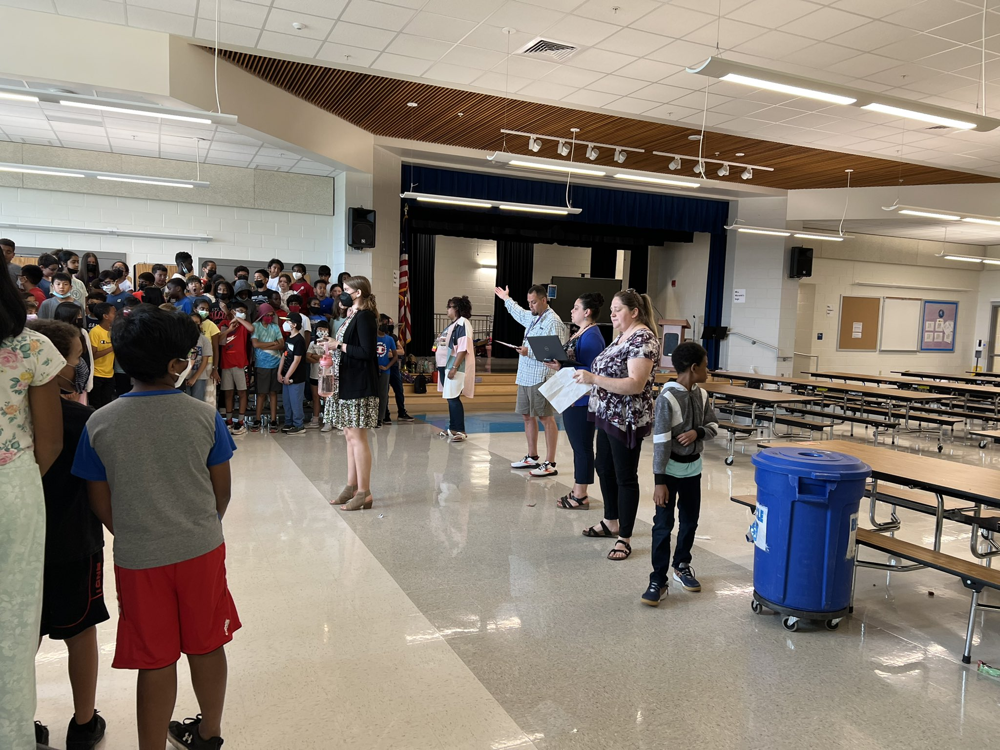
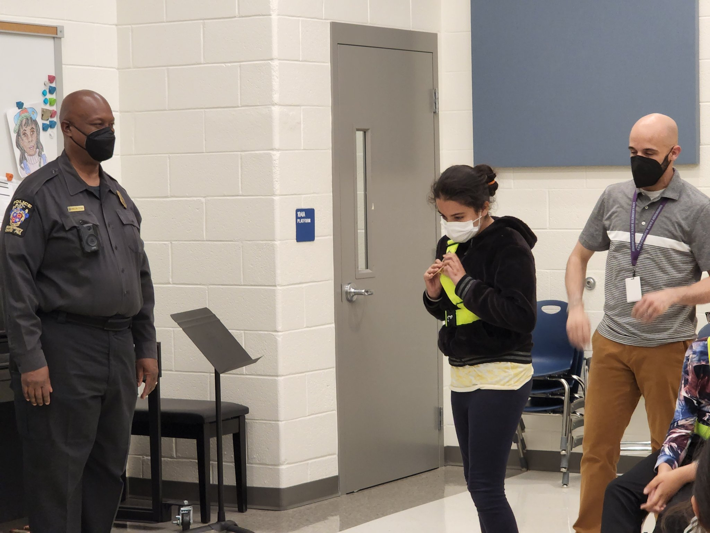

A grassy area where our students can run around and have fun. We always have teacher supervision to help keep everyone safe. The field is great for events like field day to keep students moving.

oUR cAFETERIA / aUDITOURIUM
This multipurpose room is our cafeteria and our auditourium. In the cafeteria we serve healthy food that follows myPlate guidelines to make sure our students are getting the best nutrients. Our auditourium is used for school assemblies like the 5th grade promotion to hold a large number of people.

oUR mULTIPURPOSE rOOM
This multipurpose room is used for art, music and patrol meetings. This is a very useful room and a lot learning happens inside these walls. In the picture above you can see a patrol meeting happening in action! You can also see some beautiful artwork on the walls which shows our art class is working hard. You cant see in the picture but there is also wonderful composing done in this room, music is made by our students.
Snowden's Super Staff
Our Instructional Specialists
These hardworking people are the ones that keep our school running smoothly. Without them the school would be in chaos. They also take time out of there busy schedule to interact with students and inspire us all!
What's new?
First 5th grade promotion!
Our very first in person fifth grade promotion since our doors opened in 2019-2020 was an amazing event! Hats off to our fifth grade team, our music teacher, Mrs. Jackson, and our fabulous fifth graders!